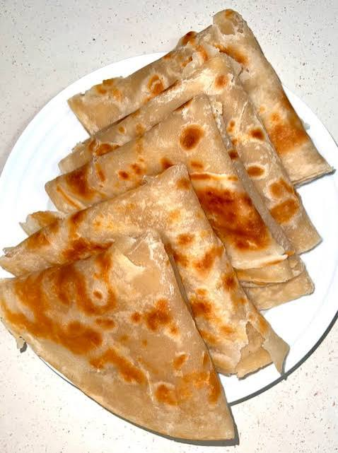

Have you ever wondered how African Chapatis are made? well I'm going to take you step by step on how to make one
Mix the Dry and Wet Ingredients:
Use warm water to jump-start gluten activation.In a large mixing bowl, combine 3 cups of all-purpose flour, 1 to 2 tablespoons of sugar, and 1 teaspoon of salt. Mix them thoroughly. Add 3 to 4 tablespoons of oil or melted fat, then gradually pour in about 1 to 1.5 cups of warm water while mixing with your hands or a wooden spoon until a rough, shaggy dough forms.Knead Thoroughly:
10 to 15 minutes working the dough.Turn the dough out onto a clean, lightly floured surface. Knead vigorously by pushing the heel of your hand into the dough, folding it over, and pressing again. You want a smooth, pliable, and slightly soft dough that is not sticky. If it feels too firm, wet your hands with a little water and keep kneading.Rest the Dough:
Crucial for relaxing the gluten structure.Form the dough into a smooth ball, rub a few drops of oil over the surface to prevent it from drying out, and place it back in the bowl. Cover it tightly with a damp cloth or plastic wrap. Let it rest undisturbed for 30 to 45 minutes. This lets the gluten relax so your dough won't shrink back when rolling.Divide and Create Layers:
The secret to flaky, multi-layered chapatis.After resting, divide the dough into 8 to 10 equal golf-ball-sized portions. Roll each portion into a smooth ball. Take one ball, flatten it, and roll it out into a flat circle. Smear a generous teaspoon of oil or melted margarine across the surface, dust lightly with a pinch of dry flour, and roll it up like a tight spiral cylinder, then coil it inward like a snail shell. Tuck the tail underneath and press down gently. Repeat for all balls and let them rest for another 10 minutes.Roll into Final Rounds:
Keep your rolling pin light and even.Take a coiled dough ball, dust it lightly with dry flour, and gently roll it out from the center outwards into an even, medium-thick circular disc (about 6 to 8 inches across). Avoid pressing too hard so you don't crush the interior layers you just created.Cook on a Hot Pan (Thawa):
Medium heat and proper oiling create golden spots.Heat a heavy-bottomed pan or thawa over medium-high heat. Place the rolled chapati on the dry pan. When small bubbles start to appear and the bottom shows light brown spots (after about 30 seconds), flip it over. Apply a teaspoon of oil or margarine around the edges and on top. Flip again, pressing gently with a wooden spatula around the edges until both sides have gorgeous golden-brown patches and are cooked through. Stack them in an insulated hot pot or container lined with a clean cloth to keep them soft and steamy.